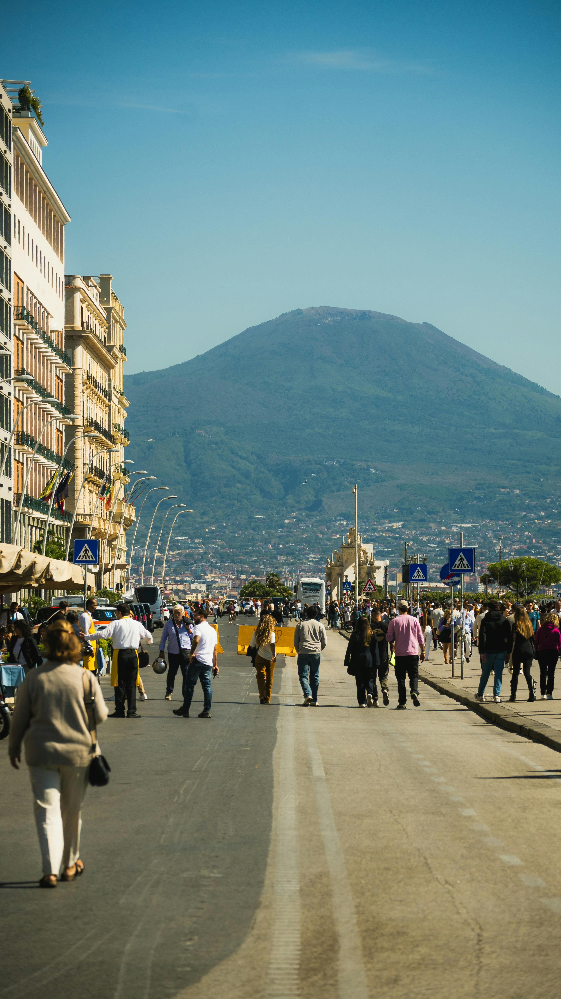

Luoghi di Napoli
Napoli è una metropoli millenaria che si svela attraverso la diversità dei suoi quartieri, ognuno custode di un'anima e di una storia unica.

Scopri di più
Il Vesuvio
Il Vesuvio domina il paesaggio e la storia della città.
Simbolo naturale unico al mondo, è uno dei vulcani più studiati e affascinanti d'Europa.
Scopri di più
Posillipo
Posillipo è uno dei quartieri più affascinanti di Napoli, celebre per le sue ville eleganti e i panorami spettacolari sul Golfo.